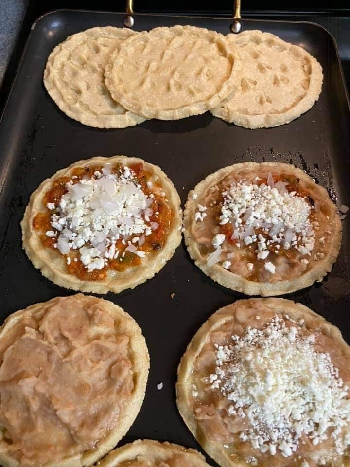

Los sopes son un antojito tradicional mexicano elaborado con masa de maíz. Se caracterizan por su base gruesa con bordes ligeramente levantados que permiten contener diversos ingredientes. Son muy populares por su sabor, versatilidad y porque pueden servirse con distintos guisos y acompañamientos.